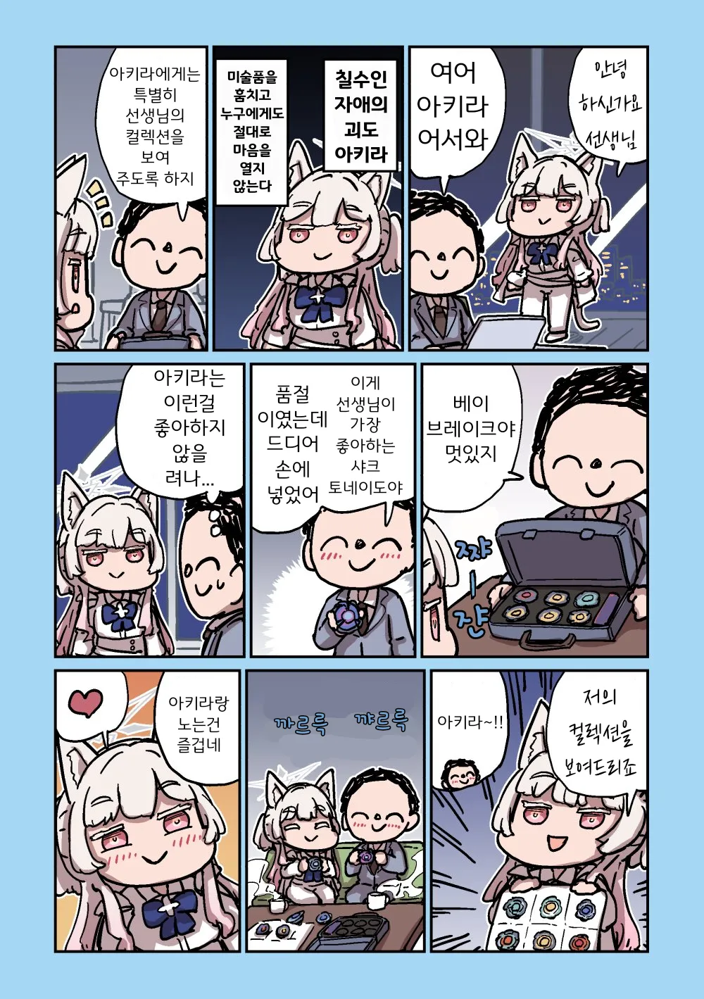

ㅆㄷ) 괴도 아키라와 노는 선생
댓글
7 수인 중 자애의 괴도인
자위의 괴도임.
선생목소리 녹음본 들으면서 자위함.
저기요
님아
놀랍게도 날조 아님
일곱 죄수중 한명인 괴도
사천왕처럼 네임드 죄수 7명을 칠수인이라고 하는데 그중에 별명이 '자애의 괴도'인 캐릭터임
아키라야 언제 출시되니
에리카도 할 줄 아는 게 어려워?
섹스 하자는 눈빛인데
절대로 마음을 열지 않는다 ㅋㅋㅋㅋㅋ
고양이련이랑 놀고 있었더니 제 샤크 토네이도가 사라졌어요ㅠ
색깔을 보니 샤크토네이도네
저거 탑블레이드인가
ㅇㅇ 탑블레이드 일본 제목이 폭렬 슛 베이블레이드임
긴빠이
칠수인자애의가 뭐임...?